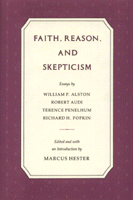

Original essays provide a dialogue between four of the most distinguished scholars now working on problems of faith, reason, and skepticism
Original essays provide a dialogue between four of the most distinguished scholars now working on problems of faith, reason, and skepticism


 Original essays provide a dialogue between four of the most distinguished scholars now working on problems of faith, reason, and skepticism
Original essays provide a dialogue between four of the most distinguished scholars now working on problems of faith, reason, and skepticism

|  |
Faith, Reason, and Skepticismedited by Marcus Hestercloth EAN: 978-0-87722-853-0 (ISBN: 0-87722-853-1) |
This book of original essays provides a dialogue between four of the most distinguished scholars now working on problems of faith, reason, and skepticism. In their essays, William P. Alston, Robert Audi, Terence Penelhum, and Richard H. Popkin address both the corrosive and the constructive influences of skepticism on Christian and Jewish concepts of faith. The authors treat questions of perennial interest in philosophy of religion: the bases of human knowledge of God, the place of reason in religious belief, the difference between religious beliefs and those based on common sense, and the reconcilability of skepticism with religious belief.
In terms of current epistemology, Alston explores the implications of reliabilism for Christian knowledge of God. Audi develops a concept of non-doxastic faith, which contrasts with flat-out beliefs, arguing that such faith can support a full range of Christian attitudes and ethics. Penelhum contends that religious beliefs cannot be defended in the same way as beliefs of common sense, and thus natural theology is essential. Popkin demonstrates, in a richly historical study, that Jewish skepticism of the seventeenth and eighteenth centuries was used and can be used to neutralize questionable metaphysical theology while leaving a mysticism and spirituality without creed or institution. The essays are preceded by an Editor’s Introduction and the volume concludes with a unifying dialogue between the four authors.
Introduction
1. Knowledge of God – William P. Alston
2. Rationality and Religious Commitment – Robert Audi
3. Parity Is Not Enough – Terence Penelhum
4. Fideism, Quietism, and Unbelief: Skepticism For and Against Religion in the Seventeenth and Eighteenth Centuries – Richard H. Popkin
Concluding Reactions
About the Authors
Index
Marcus Hester is Professor of Philosophy at Wake Forest University.
Contributors: William P. Aston, Robert Audi, Terence Penelhum, and Richard H. Popkin
Philosophy and Ethics
Religion
© 2015 Temple University. All Rights Reserved. This page: http://www.temple.edu/tempress/titles/828_reg.html.